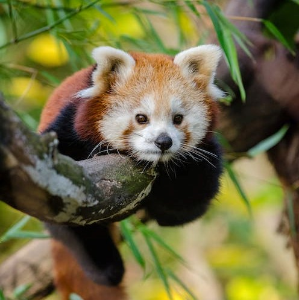
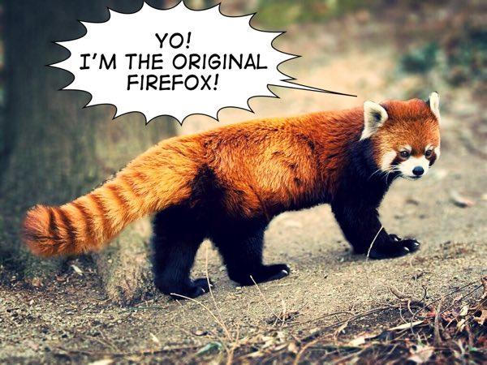

Vrati se na početnu
Red panda
Curriculum Vitae

Tko sam ja?
- Crvena ili mala panda je sisavac biljožder
- Neznatno veći od domaće mačke, dužine oko 56 centimetara
- Izvorno nastanjuje Himalaju u Nepalu i južnoj Kini.
- Populacija se procjenjuje na manje od 2.500 odraslih jedinki
Osnovne informacije
| Red Panda |
lat. Ailurus fulgens |
| Stanište |
šume |
| Omiljena hrana |
bambus, voće, insekti |
| Težina |
3-6 kg |
| Status |
ugrožena vrsta |
Edukacija
životna škola
Vještine
- skakanje s grane na granu
- trganje bambusa zubima
Fun facts
- Crvena panda je prva dobila ime "panda"
- Nije povezana s velikim pandama
-
Crvena panda ima više imena, jedno od kojih je i
Firefox
